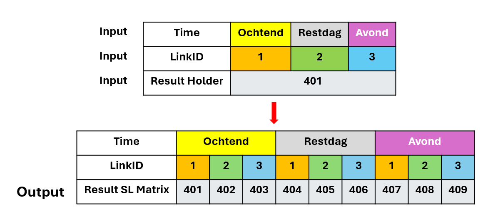
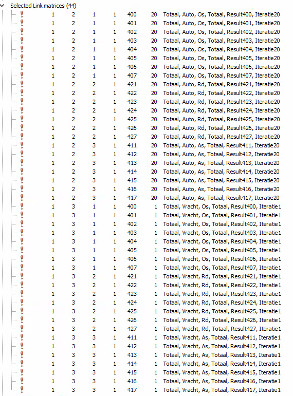

5 (Multiple) Selected Link Compress
This job has the advantage of doing multiple selected link compressions in one run. You can specify the links and directions you want to analyze in the code. The job will then loop through each specified link and direction, performing the selected link compression and generating the corresponding reports. Two forms are supported:
- Only store resulting select link matrices in OT database without exporting to Excel.
- Export to Excel after compression to 65x65 matrices or MRDH municipalities or another.
5.1 Purpose
This job calculates selected link compressions for specified links and generates reports in Excel. You can use this job to calculate selected link assignments for auto, vracht, OV and bicycles.You can use this job to calculate selected link assignments without generating reports in Excel.
The following image is a schematic and shows an example of the output and the matrix numbers. The output takes each possible combinations of time and LinkID.

5.2 Inputs
vracht: Set to true of false to indicate if vracht should be included in the assignment.auto: Set to true of false to indicate if auto should be included in the assignment.ov: Set to true of false to indicate if OV should be included in the assignment.fiets: Set to true of false to indicate if bicycles should be included in the assignment.dagdelen: Array with the time periods to be included in the assignment. Possible values are T_Os, T_Rd, T_As. -totaal_toedeling_bestaat: Set to true if the total assignment already exists in the OT database. This can save time if you have already run a full assignment and only want to do selected link assignments.threads: Number of threads to be used for the assignment. This can speed up the assignment process.linknrs: Array of arrays with the link numbers and directions to be analyzed. Each inner array should contain the link number and direction (1 for outbound, 2 for inbound, 3 for both).
# Variabelen:
#====================================================================================================================
$vracht = true
$auto = true
$ov = false
$fiets = false
$dagdelen = [T_Rd] # [T_Os,T_Rd,T_As]
$totaal_toedeling_bestaat = false
$threads = 11
# linknummers opgeven en daarna de richting [3 = beide, 1 = heen 2 = terug]
linknrs = [[16144,1],[16143,2]] 5.3 Outputs
The outputs of this job are the selected link matrices stored in the OT database. If you choose to export to Excel, the output will also include Excel files with the selected link assignment results. You can also export to other formats if from the GUI when you open the matrix.
Here is the output of an example run

5.4 Code
5.4.1 Without compression or export to Excel
# Variabelen:
#====================================================================================================================
$vracht = true
$auto = true
$ov = false
$fiets = false
$dagdelen = [T_Rd] # [T_Os,T_Rd,T_As]
$totaal_toedeling_bestaat = false
$threads = 11
# linknummers opgeven en daarna de richting [3 = beide, 1 = heen 2 = terug]
linknrs = [[16144,1],[16143,2]]
for x in 0..linknrs.length-1 # hier niks doen, loop
$link = linknrs[x] # hier niks doen, loop
$result = 421+x # uniek getal opgeven die nog niet binnen deze variant gebruikt wordt(alleen getal aanpassen)
#$result = 400
load $Ot.dirJob+'Standaard uitvoer\Routines\SelectedLinkCompress\01a Toedelen MVT (sellink).rb' if $auto && $vracht
load $Ot.dirJob+'Standaard uitvoer\Routines\SelectedLinkCompress\01b Toedelen OV (sellink).rb' if $ov
load $Ot.dirJob+'Standaard uitvoer\Routines\SelectedLinkCompress\01c Toedelen Fiets (sellink).rb' if $fiets
load $Ot.dirJob+'Standaard uitvoer\Routines\SelectedLinkCompress\02 Aanmaken OD-matrices.rb'
end5.4.2 With compression or export to Excel
The only difference is the last line in the job. The difference with the previous code is that after creating the OD matrices, a compression to 65x65 matrices or MRDH municipalities or another is done and exported to Excel.
# Variabelen:
#====================================================================================================================
$vracht = true
$auto = true
$ov = false
$fiets = false
$dagdelen = [T_Rd] # [T_Os,T_Rd,T_As]
$totaal_toedeling_bestaat = false
$threads = 11
# linknummers opgeven en daarna de richting [3 = beide, 1 = heen 2 = terug]
linknrs = [[16144,1],[16143,2]]
for x in 0..linknrs.length-1 # hier niks doen, loop
$link = linknrs[x] # hier niks doen, loop
$result = 421+x # uniek getal opgeven die nog niet binnen deze variant gebruikt wordt(alleen getal aanpassen)
load $Ot.dirJob+'Standaard uitvoer\Routines\SelectedLinkCompress\01a Toedelen MVT (sellink).rb' if $auto && $vracht
load $Ot.dirJob+'Standaard uitvoer\Routines\SelectedLinkCompress\01b Toedelen OV (sellink).rb' if $ov
load $Ot.dirJob+'Standaard uitvoer\Routines\SelectedLinkCompress\01c Toedelen Fiets (sellink).rb' if $fiets
load $Ot.dirJob+'Standaard uitvoer\Routines\SelectedLinkCompress\02 Aanmaken OD-matrices.rb'
load $Ot.dirJob+'Standaard uitvoer\Routines\SelectedLinkCompress\03 matrixcompress sellink (MRDH groot).rb'
end